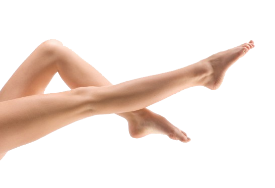

Функция и културни аспекти
Краката са често използвани за скок, разходка, бягане, ритане, правостоящ и подобен род активност и са важни части от масата на тялото. Много хора (предимно младежи) и често жени в много западни култури често си премахват космите на краката. Кола маска, епилиране, бръснене на крака се възприемат понякога като младоликост и са често смятани за атрактивни в тези култури.
Езикови особености
В българския език се използва основно думата крак, но има и друга дума, която също се използва, но значително по-рядко, има я и в руския, и е нога. По-популярна дума до последната е бързоног.
